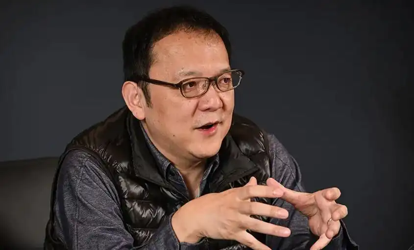
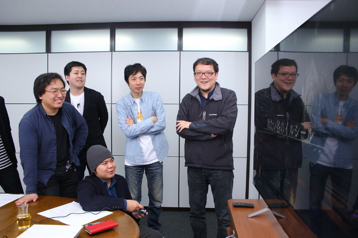
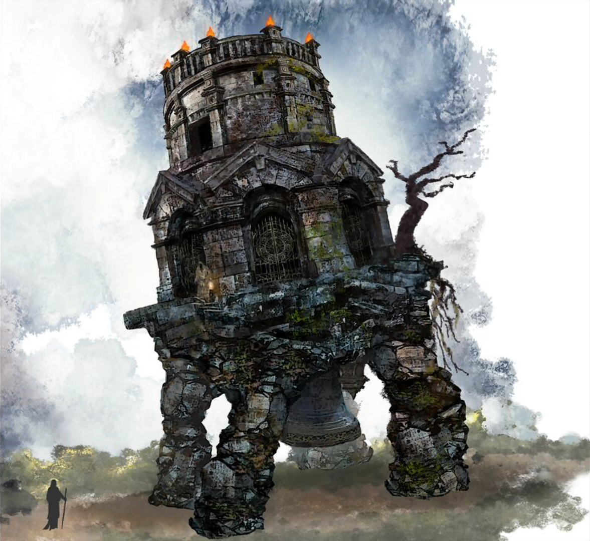

宮崎英高｜Hidetaka Miyazaki
日本のゲームディレクター／デザイナー。重厚で抑制の効いた語り、鋭い手触りの戦闘、 そして「余白—推理—共作」という体験設計で知られる。作品は説明で導くのではなく、 試行錯誤の往復運動の中で世界と相互に彫り合う——その制作態度ゆえに、彼は「アーティスト」と呼ばれる。 彼がつくるのはゲームだけではなく、見る・考える・行動するための方法でもある。
小伝
- 1974年生まれ。2004年にフロム・ソフトウェア入社。『アーマード・コア』などに参加。
- 『デモンズソウル』『ダークソウル』で「高圧だが公正」な難易度設計と断片的な物語手法を確立。
- 2014年よりフロム・ソフトウェア社長・代表取締役。創作とチームの共創体制を継続。
- 主な監督／総指揮作：『デモンズソウル』『ダークソウル』シリーズ、『Bloodborne』、 『SEKIRO: SHADOWS DIE TWICE』、『ELDEN RING』ほか。
なぜ「アーティスト」と呼ぶのか
「アーティスト」は肩書ではなく、方法と結果の一致である。宮崎英高は、 主題・形式・素材・観客参加を強く結びつける。 主題は〈絶境における尊厳と選択〉、形式は〈空間叙事とリスク管理〉、 素材は〈アニメーション、フレーム単位の手触り、アフォーダンス〉。 そして観客＝プレイヤーは、失敗・内省・再挑戦を通じて共同作者になる。
- 主題の一貫性：世界観が先行し、物語は最小限の示唆に留めて解釈権をプレイヤーへ返す。
- 形式言語：レベル構成と敵配置が「文法」、リスク／リワードの曲線が「韻律」。
- 素材の選択：当たり判定・硬直・スタミナ・無敵時間など微変数を、絵具のように磨き込む。
- 共同制作：環境手掛かりやアイテム文、隠された情報が自発的な考証と再叙述を誘発。
方法スケッチ（Playbook）
- 世界観 → 地形 → 遭遇 → 数値の逆算設計。まず体験を定め、後から仕様を固める。
- 失敗＝情報：難易度は罰ではなく学習の装置として働く。
- 余白の叙述：テキストは点火剤。炎を広げるのは探索と連想である。